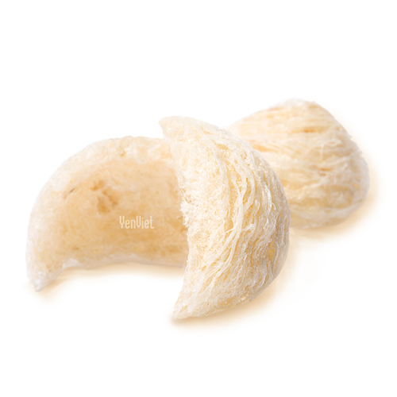

Bạch Thanh Yến
Bạch Yến (hay còn gọi là tổ yến trắng) với hàm lượng dinh dưỡng quý giá gồm hơn 20 acid amin thiết yếu và acid sialic, tỉ lệ Canxi cao hơn hẳn các loại tổ yến thông thường, là thiên phẩm dành cho sức khỏe và sắc đẹp.
Yến Việt đem đến bạn món quà quý giá và trân trọng nhất từ những Tổ Yến được kiểm định chặt chẽ bằng quy trình YV-PureNest, đảm bảo Tổ Yến Thật Nguyên chất Hoàn toàn Thiên Nhiên dành tặng cho bạn và những người bạn yêu thương.
100
10,000,000